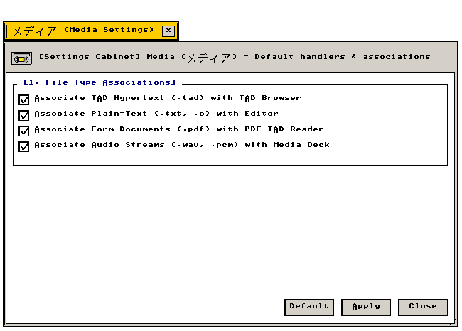

メディア設定 (Media)
MIME型関連付け · TADハイパーテキスト · 実身ハンドラ · オーディオルーター
データ型（MIME/TAD）関連付け、実身ファイルハンドラ、メディアストリーム経路の設定仕様
"MIME format associations, Real Body handler bindings, and multimedia stream routing pipelines."
← 設定フォルダ (Settings Folder Index)
メディア設定（Media） — 実身データ型（TAD、プレーンテキスト、PDF、PCM音声）と起動アプリケーションの関連付けテーブルを管理する設定アプレット。
"Data type association manager: mapping Real Body MIME tags to system executables and media decoders."
画面プレビュー (Screen Preview)

実機描画フレームバッファより自動抽出された透過メディア設定ウィンドウ (Native Headless GDEV Capture)
概要 (Overview)
実身データ型（TAD、プレーンテキスト、PDF、PCM音声）と起動アプリケーションの関連付けテーブルを管理する設定アプレット。
"Data type association manager: mapping Real Body MIME tags to system executables and media decoders."
基本操作仕様 (Operational Specifications)：
・[標準 (Default)]：工場出荷時の初期設定に復元します。
・[適用 (Apply)]：設定変更を確定し、システム状態へ反映します。
・[閉じる (Close)]：設定ウィンドウを破棄します（cls_wnd()）。
1. 実身データ型とハンドラ関連付け (Real Body MIME & Handler Associations)
実身アイコンダブルクリック時に呼び出されるデフォルト起動アプリケーションの関連付け仕様。
"Execution routing table mapping file extensions and TAD segment types to default reader applications."
| 設定項目・機能名 |
動作概要と視覚仕様 (Functional Specification) |
技術仕様・幾何学構造 (Technical / C99 Definition) |
Associate TAD Hypertext (.tad) with TAD Browser
TADハイパーテキスト関連付け |
TADハイパーテキスト実身（.tad）を標準TADブラウザ（tad_browser）で開くようバインドします。 |
型識別: TAD_RECORD_MAIN
C99: g_state_media.checks[0] |
Associate Plain-Text (.txt, .c) with T-Editor
プレーンテキスト関連付け |
UTF-8/ASCIIプレーンテキスト（.txt, .c, .h）をT-Editorで開くようバインドします。 |
起動バイナリ: src/apps/t_editor.c
C99: g_state_media.checks[1] |
Associate Form Documents (.pdf) with PDF TAD Reader
PDF電子帳票関連付け |
Adobe PDF/電子帳票文書をBTRON PDFリーダーアプレットへ関連付けます。 |
ビューア: src/apps/clarity.c
C99: g_state_media.checks[2] |
Associate Audio Streams (.wav, .pcm) with Media Deck
音声ストリーム関連付け |
WAV/PCM音声ファイルをCassetteメディアデッキアプレットへ関連付けます。 |
再生エンジン: src/apps/cassette.c
C99: g_state_media.checks[3] |
3. 全設定パラメータ仕様一覧 (Configuration Parameter Specifications)
メディア設定が提供するすべての設定要素、初期値、およびC99内部シンボル。
"Comprehensive parameter specification table: indexing all UI widget states, factory defaults, and underlying C99 data symbols."
| セクション |
パラメータ名 / UI要素 |
標準値 (Default) |
設定値 / 選択肢 |
C99 内部変数・シンボル |
| [1] ハンドラ関連付け |
TAD Hypertext (.tad) |
有効 (TRUE) |
チェックボックス |
g_state_media.checks[0] |
| [1] ハンドラ関連付け |
Plain-Text (.txt, .c) |
有効 (TRUE) |
チェックボックス |
g_state_media.checks[1] |
| [1] ハンドラ関連付け |
PDF Document (.pdf) |
有効 (TRUE) |
チェックボックス |
g_state_media.checks[2] |
| [1] ハンドラ関連付け |
Audio Stream (.wav) |
有効 (TRUE) |
チェックボックス |
g_state_media.checks[3] |
| アクション制御 |
[ 標準 (Default) ] |
— |
初期設定へ復元 |
全フラグTRUEリセット |
| アクション制御 |
[ 適用 (Apply) ] |
— |
変更確定と再描画 |
is_dirty = FALSE, redraw_all_windows() |
| アクション制御 |
[ 閉じる (Close) ] |
— |
ウィンドウ破棄 |
cls_wnd(wnd) |
関連コンポーネント (Related Components)